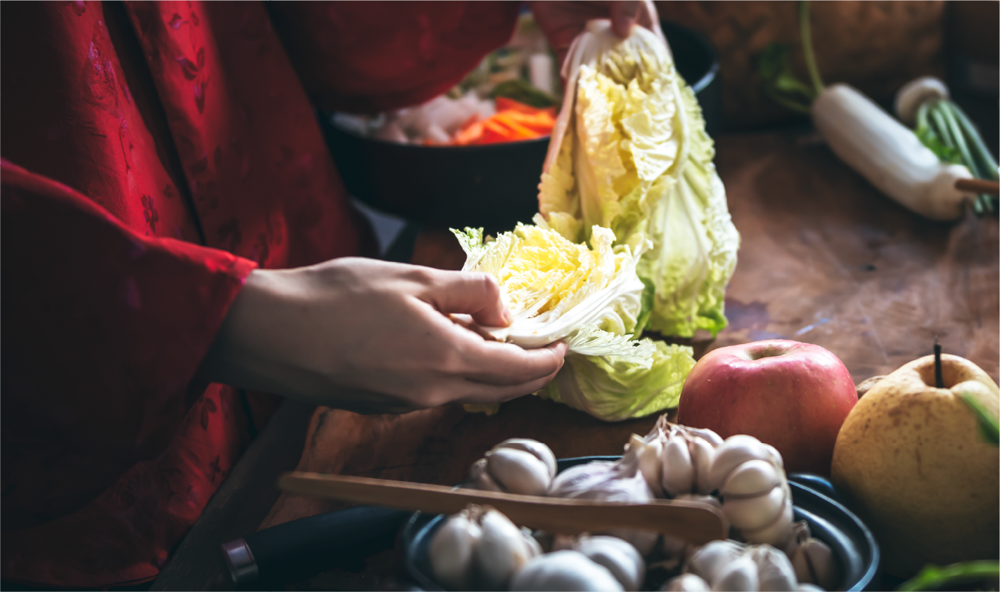
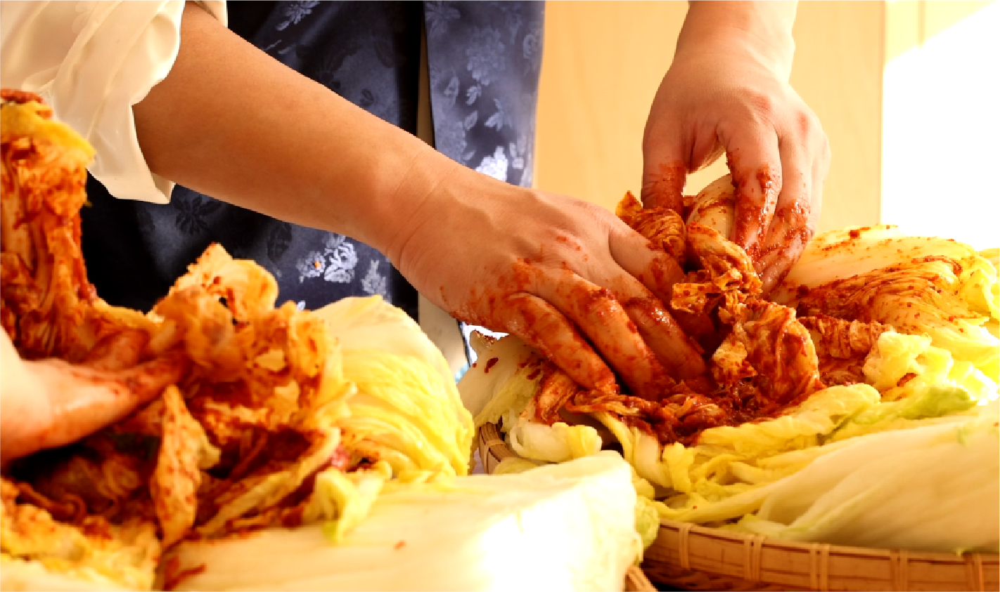
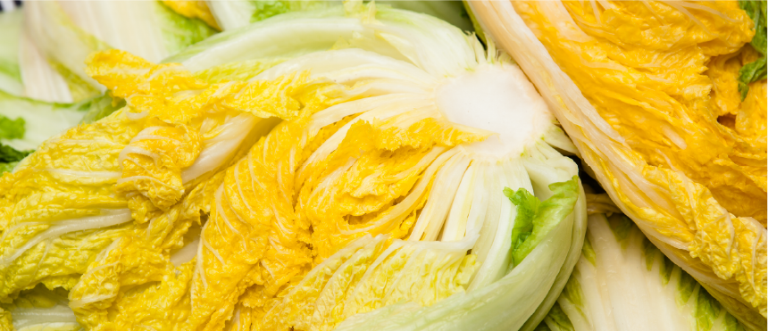

재료를 살피다
배추 한 잎, 무 한 조각.
김치의 시작이 되는 재료를 살핍니다.

眞 善 美
오래 지켜온 정성에
우리 식탁의 맛있는 일상을 담습니다.
매일의 밥상에, 오래도록 함께할 맛.
우리에게 익숙한 김치, 진선미의 정성으로.01 / OUR KIMCHI
입맛에 맞게 고르고,
식탁에 넉넉한 즐거움을 더하세요.
국내용과 수출용, 원하는 상품 구분을 선택해 보세요.
02 / OUR STORY
김치는 한 끼의 반찬을 넘어,
누군가의 손맛과 식탁의 기억을 이어줍니다.
1987년부터 이어온 진선미의 이야기.
재료를 고르는 순간부터 김치를 담그는 손길까지,
익숙해서 더 소중한 맛을 전합니다.

정성을 담고 · 전통을 잇다03 / THE MAKING
맛있는 김치를 만드는 과정에
진선미의 이야기가 있습니다.

배추 한 잎, 무 한 조각.
김치의 시작이 되는 재료를 살핍니다.
재료와 양념이 어우러지는 시간.
진선미가 이어온 맛을 담습니다.
갓 지은 밥 옆에 놓인 김치 한 접시.
매일의 식사가 조금 더 풍성해집니다.
05 / GOOD TO KNOW
구매 전에 궁금한 것들을 모았어요.
졸업전시용으로 제작한 쇼핑몰 시안입니다. 상품 선택과 주문 완료를 체험할 수 있으며, 실제 결제·주문 접수·배송은 이루어지지 않습니다. 모든 가격과 옵션은 전시용 예시입니다.
먹는 빈도와 냉장고 공간을 고려해 선택해 주세요. 처음에는 작은 용량부터 맛보고, 자주 즐기는 김치는 큰 용량으로 고르는 것을 추천합니다. 상세 화면에서 용량별 예시 가격을 비교할 수 있습니다.
제품에 표시된 보관 방법을 우선 확인해 주세요. 일반적으로 밀폐 용기에 담아 냉장 보관하고, 먹을 만큼만 깨끗한 도구로 덜어 드시면 좋습니다.
이 시안의 주문 체험은 배송비 3,500원, 상품 합계 50,000원 이상 무료 배송으로 설정되어 있습니다. 실제 배송 정책이 아니며, 실제 상품의 원재료·알레르기·원산지·배송 정보는 공식 판매처에서 확인해 주세요.